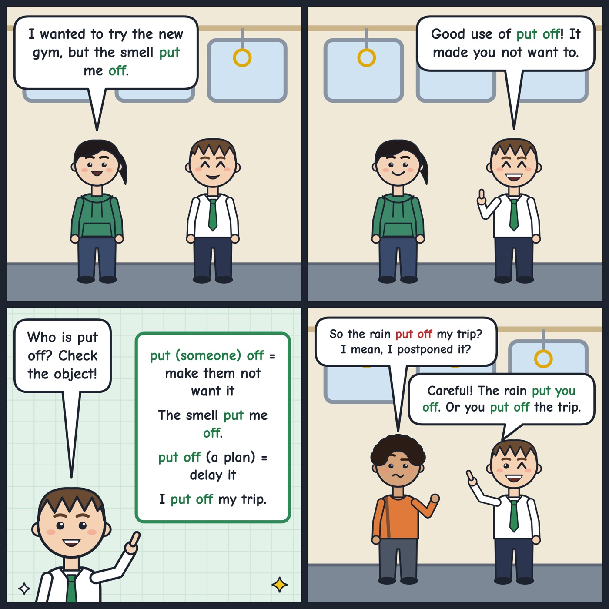

put (someone) off
To make someone not want to do something or not like something.
The long queue put me off, so I went to another restaurant.
'Put someone off' means to make them not want something. 'Put off a trip' means to delay it.

Your turn
What put you off a food, a film, or a place?
What put you off a food, a film, or a place?